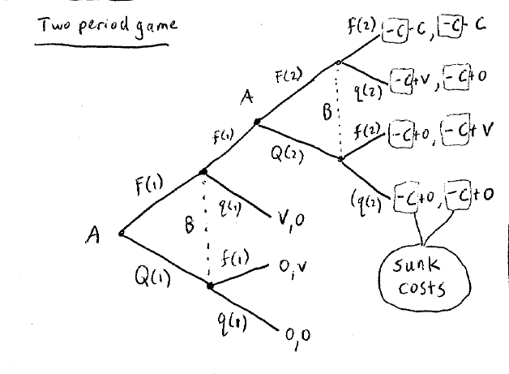
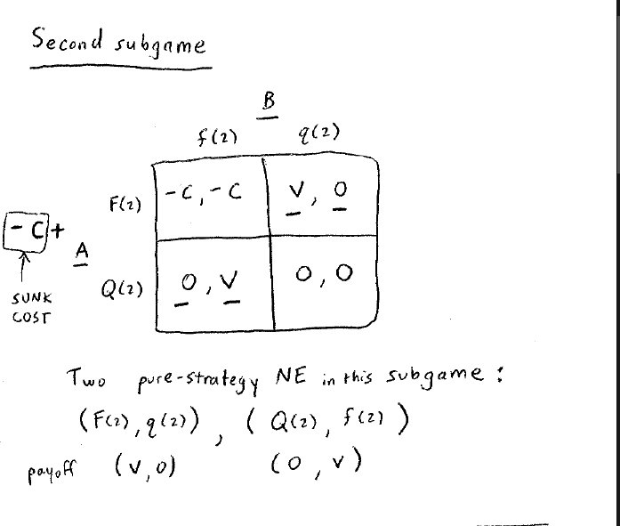
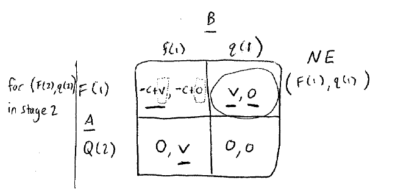
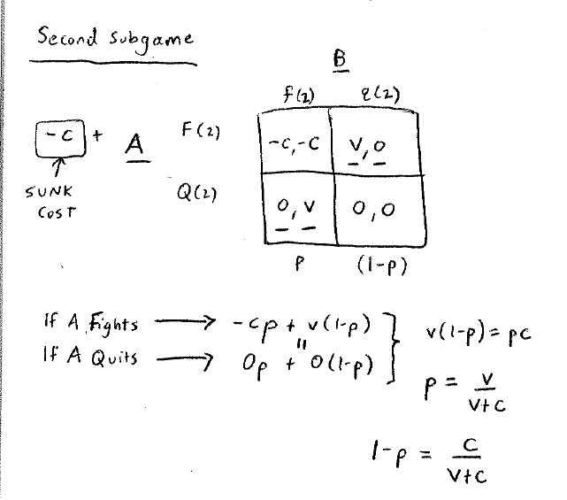

Lecture 20
这一节中心思想：计算subgame，然后往前回代。
战争消耗
两位玩家，有两种选择，Fight或者是Quit。
- 要是两者都选择推出，那么本轮的收益为（0, 0），游戏结束。
- 要是一方fight，该方收益V，另一方收益为0。
- 要是两者都选择fight，收益为（-C, -C）。
假设
两轮博弈
我们分类讨论，分别讨论纯策略（pure strategy）的结果和混合策略（mixed strategy）的结果。
pure strategy

第二轮继续的话，存在前面的沉没成本C。
我们将-C提取出来，并且计算第二轮博弈的NE。

发现有两个NE (F(2), q(2))和(Q(2), f(2))
假设第二局选择的是(F(2), q(2))，那么收益为(v, 0)，在第一轮的博弈中进行回代：

我们发现这个局面的NE为(F(1), q(1))。
同理我们也能第二局选择的是(Q(2), f(2))代入进行计算。
最终，在pure strategy的情况下，有两个纳什均衡点：
mixed strategy
我们还是先计算第二轮的NE。

发现在混合策略下，B以的概率选择fight, 以的概率quit的条件下，A的；同理可以计算B的payoffs = 0。
那么收益为(0, 0)。
带入到第一轮中的游戏中，发现第二轮的游戏与第一轮的游戏一摸一样。
最后得到整体的NE：
无限轮
这个就是战争模型了，但是随着博弈次数的增加，两者连续进行战斗的概率指数减小。